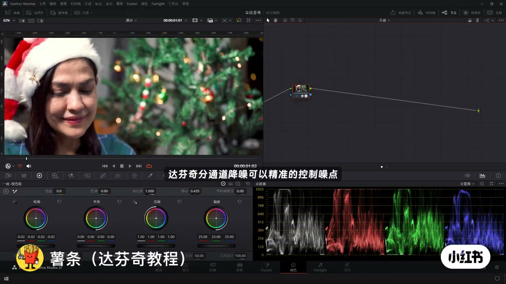
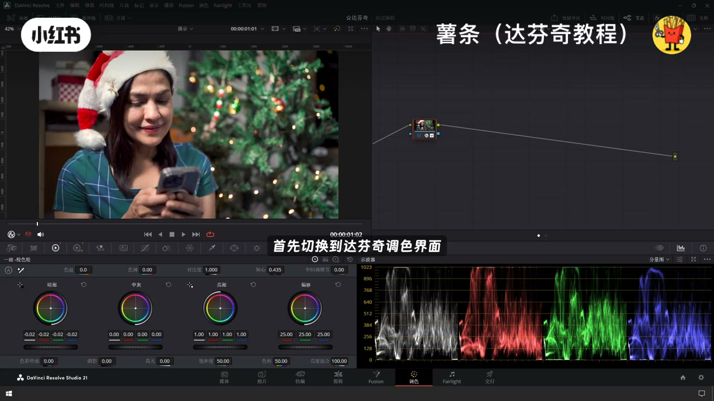
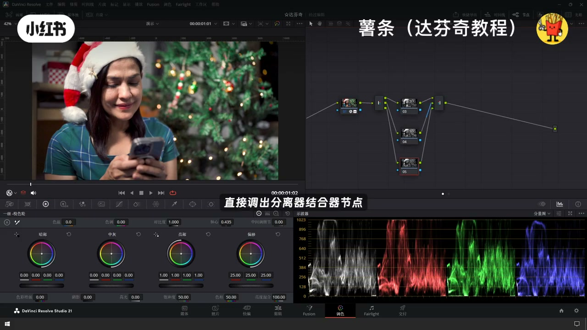
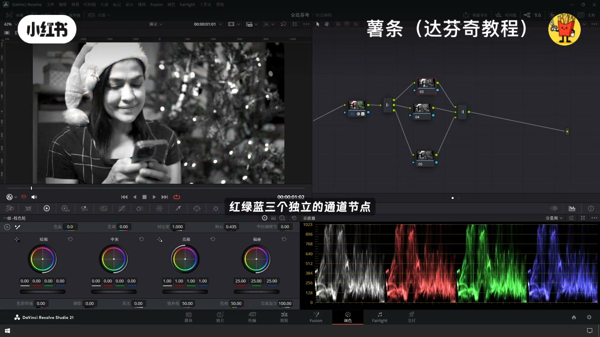
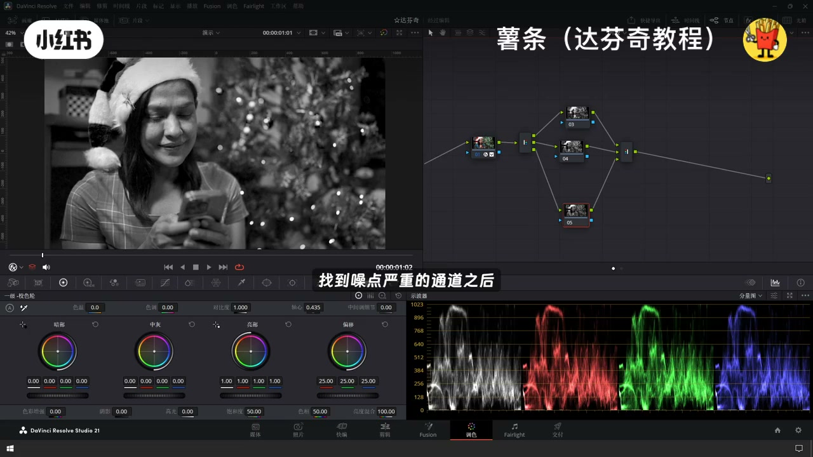
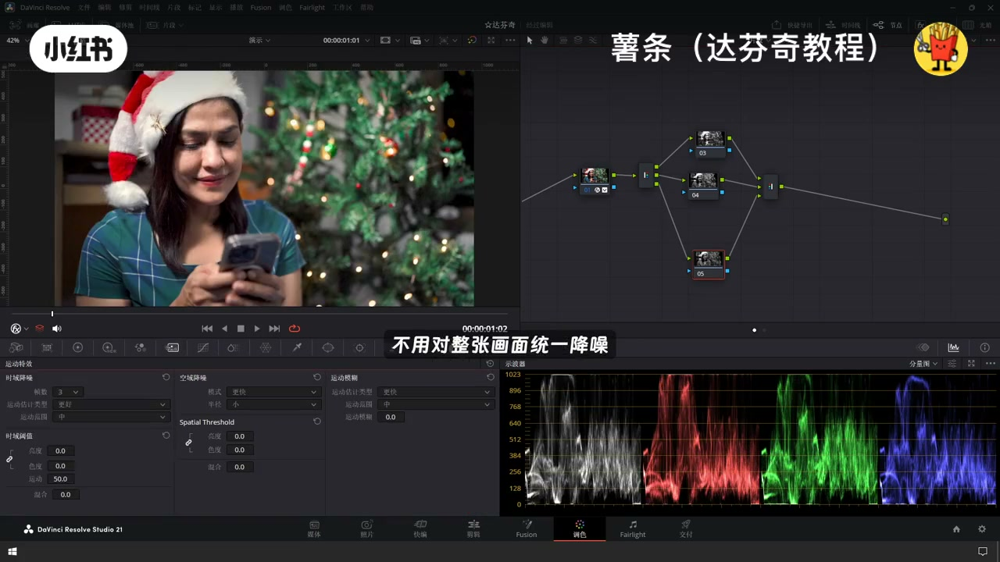
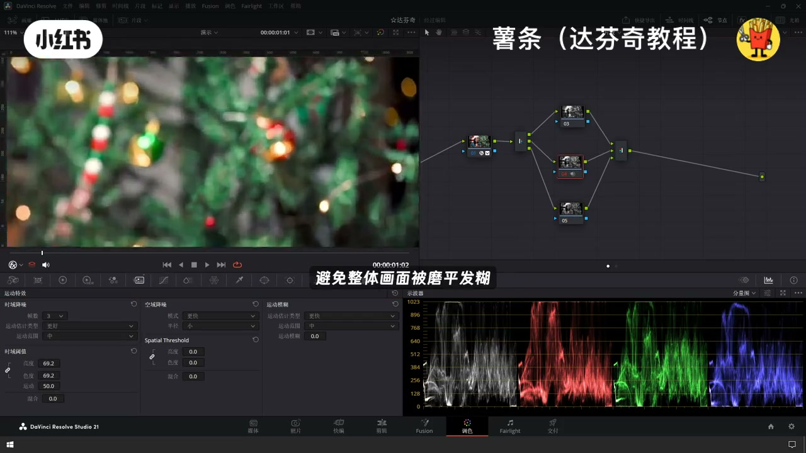
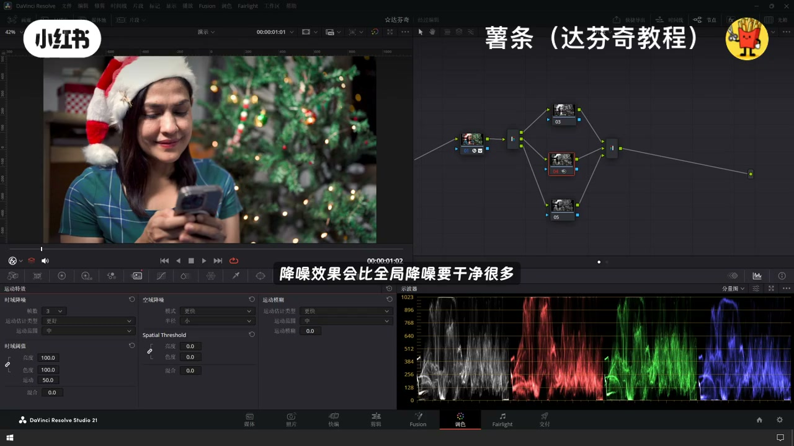

内容要点
「达芬奇分通道降噪_视频画面噪点精细处理」教程要点：达芬奇分通道降噪,可以精准的控制噪点牢牢保住画面的质感 → 操作上手也很简单 → 首先切换到达芬奇调色界面 → 按下快捷键AVT加Y…
知识结构
[00:00–00:15]
达芬奇分通道降噪,可以精准的控制噪点牢牢保住画面
达芬奇分通道降噪,可以精准的控制噪点牢牢保住画面的质感
[00:14–00:32]
添加之后,画面会拆分出红绿蓝三个独立的通道节点
添加之后,画面会拆分出红绿蓝三个独立的通道节点
[00:31–00:44]
最大程度的保留画面的原生细节
最大程度的保留画面的原生细节
总步骤
- 达芬奇分通道降噪,可以精准的控制噪点牢牢保住画面的质感
- 操作上手也很简单
- 首先切换到达芬奇调色界面
- 按下快捷键AVT加Y
- 直接调出分离器结合器节点
总结
达芬奇分通道降噪,可以精准的控制噪点牢牢保住画面的质感
适用边界：短视频速览；具体菜单名以你安装的 Resolve 语言包为准。
踩坑：口播可能有同音错字，已按画面步骤校对；参数以检查器实值为准。
00:00–00:15达芬奇分通道降噪,可以精准的控制噪点牢牢保住画面
达芬奇分通道降噪,可以精准的控制噪点牢牢保住画面的质感；操作上手也很简单；首先切换到达芬奇调色界面；按下快捷键AVT加Y；直接调出分离器结合器节点

[00:00] 达芬奇分通道降噪,可以精准的控制噪点牢牢保住画面的质感
DaVinci Resolve

[00:05] 操作上手也很简单
On-screen tutorial step in DaVinci Resolve
00:14–00:32添加之后,画面会拆分出红绿蓝三个独立的通道节点
添加之后,画面会拆分出红绿蓝三个独立的通道节点；我们分别预览,观察噪点主要堆积在哪一个通道；找到噪点严重的通道之后；只需要单独给这个通道施加降噪；不用对整张画面统一降噪

[00:14] 添加之后,画面会拆分出红绿蓝三个独立的通道节点
add , node

[00:19] 我们分别预览,观察噪点主要堆积在哪一个通道
On-screen tutorial step in DaVinci Resolve
00:31–00:44最大程度的保留画面的原生细节
最大程度的保留画面的原生细节；避免整体画面被磨平发糊；如果你的素材噪点分布不均匀；用这个方法降噪,效果会比全局降噪要干净很多

[00:31] 最大程度的保留画面的原生细节
On-screen tutorial step in DaVinci Resolve

[00:34] 避免整体画面被磨平发糊
On-screen tutorial step in DaVinci Resolve

[00:36] 用这个方法降噪,效果会比全局降噪要干净很多
On-screen tutorial step in DaVinci Resolve

[00:41] 用这个方法降噪,效果会比全局降噪要干净很多
On-screen tutorial step in DaVinci Resolve
口述/画面要点（14段）
结合 Whisper medium 与画面大字整理；专有名词已校对。
达芬奇分通道降噪,可以精准的控制噪点牢牢保住画面的质感
操作上手也很简单
首先切换到达芬奇调色界面
按下快捷键AVT加Y
直接调出分离器结合器节点
添加之后,画面会拆分出红绿蓝三个独立的通道节点
我们分别预览,观察噪点主要堆积在哪一个通道
找到噪点严重的通道之后
只需要单独给这个通道施加降噪
不用对整张画面统一降噪
最大程度的保留画面的原生细节
避免整体画面被磨平发糊
如果你的素材噪点分布不均匀
用这个方法降噪,效果会比全局降噪要干净很多